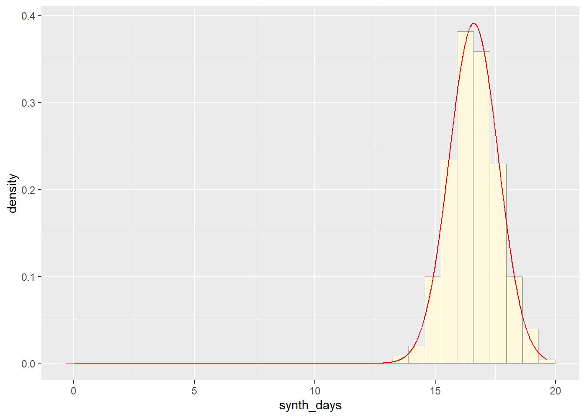
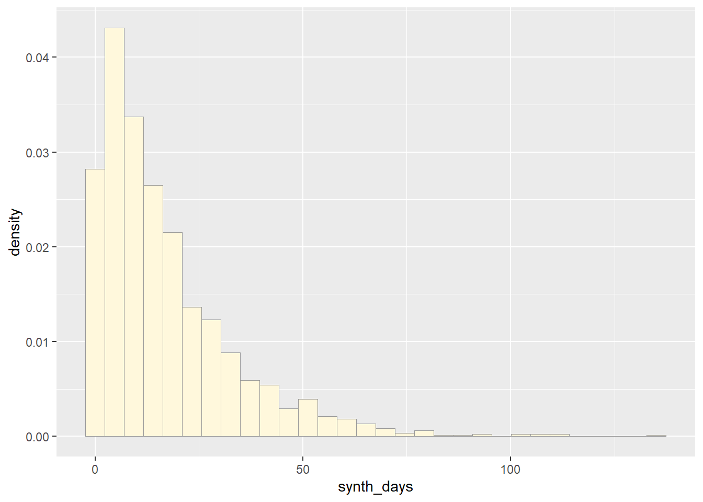
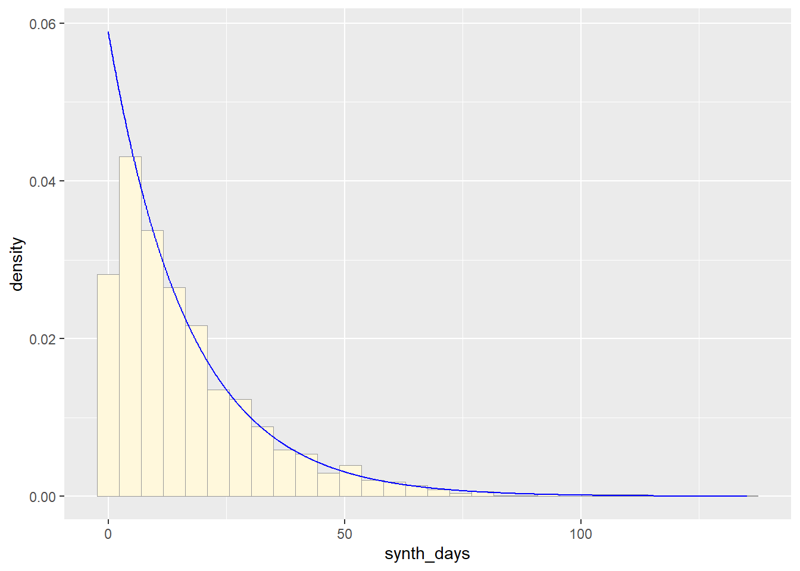

Homework8
Noah W.K. Mattheis
2025-03-19
Starting with our data set:
z <- read.table("synthetic_cannabis_use.csv",header=TRUE,sep=",")
z <- subset(z, synth_days != 0)
str(z)## 'data.frame': 1743 obs. of 4 variables:
## $ wave : int 1 2 3 4 2 3 4 1 3 3 ...
## $ iso : chr "y" "y" "n" "y" ...
## $ synth_days: int 20 1 28 24 26 16 1 28 16 8 ...
## $ subject_id: int 1 1 1 1 2 2 2 3 3 4 ...summary(z)## wave iso synth_days subject_id
## Min. :1.000 Length:1743 Min. : 1.00 Min. : 1.0
## 1st Qu.:1.000 Class :character 1st Qu.: 6.00 1st Qu.:149.0
## Median :2.000 Mode :character Median :19.00 Median :308.0
## Mean :2.415 Mean :16.62 Mean :303.5
## 3rd Qu.:3.000 3rd Qu.:28.00 3rd Qu.:451.5
## Max. :4.000 Max. :28.00 Max. :600.0Opening Library
library(ggplot2) # for graphics
library(MASS) # for maximum likelihood estimationReading in a data vector for testing distributions
# quick and dirty, a truncated normal distribution to work on the solution set
# z <- rnorm(n=3000,mean=0.2)
# z <- data.frame(1:3000,z)
# names(z) <- list("ID","synth_days")
# z <- z[z$synth_days>0,]
# str(z)
# summary(z$synth_days)Plot Histogram of Data
Plot a histogram of the data, using a modification of the code from lecture. Here we are switching from qplot to ggplot for more graphics options. We are also rescaling the y axis of the histogram from counts to density, so that the area under the histogram equals 1.0.
p1 <- ggplot(data=z,
aes(x=synth_days, y=after_stat(density))) +
geom_histogram(color="grey60",fill="cornsilk",linewidth=0.2)
print(p1)## `stat_bin()` using `bins = 30`. Pick better value with `binwidth`.Add Empyrical Density Curve - adding a Kernel Density Plot
This is an empirical curve that is fitted to the data. It does not assume any particular probability distribution, but it smooths out the shape of the histogram:
p1 <- p1 + geom_density(linetype="dotted",size=0.75)## Warning: Using `size` aesthetic for lines was deprecated in ggplot2 3.4.0.
## ℹ Please use `linewidth` instead.
## This warning is displayed once every 8 hours.
## Call `lifecycle::last_lifecycle_warnings()` to see where this warning was
## generated.print(p1)## `stat_bin()` using `bins = 30`. Pick better value with `binwidth`.
Get Maximum Likelihood Parameters for Normal distribution
Next, fit a normal distribution to your data and grab the maximum likelihood estimators of the two parameters of the normal, the mean and the variance:
normPars <- fitdistr(z$synth_days,"normal")
print(normPars)## mean sd
## 16.6161790 10.4683832
## ( 0.2507442) ( 0.1773029)str(normPars)## List of 5
## $ estimate: Named num [1:2] 16.6 10.5
## ..- attr(*, "names")= chr [1:2] "mean" "sd"
## $ sd : Named num [1:2] 0.251 0.177
## ..- attr(*, "names")= chr [1:2] "mean" "sd"
## $ vcov : num [1:2, 1:2] 0.0629 0 0 0.0314
## ..- attr(*, "dimnames")=List of 2
## .. ..$ : chr [1:2] "mean" "sd"
## .. ..$ : chr [1:2] "mean" "sd"
## $ n : int 1743
## $ loglik : num -6566
## - attr(*, "class")= chr "fitdistr"normPars$estimate["mean"] # note structure of getting a named attribute## mean
## 16.61618Plot Normal Probability Density:
Now let’s call the dnorm function inside ggplot’s stat_function to generate the probability density for the normal distribution. Read about stat_function in the help system to see how you can use this to add a smooth function to any ggplot. Note that we first get the maximum likelihood parameters for a normal distribution fitted to thse data by calling fitdistr. Then we pass those parameters (meanML and sdML to stat_function):
meanML <- normPars$estimate["mean"]
sdML <- normPars$estimate["sd"]
xval <- seq(0,max(z$synth_days),len=length(z$synth_days))
stat <- stat_function(aes(x = xval, y = ..y..), fun = dnorm, colour="red", n = length(z$synth_days), args = list(mean = meanML, sd = sdML))
p1 + stat## Warning: The dot-dot notation (`..y..`) was deprecated in ggplot2 3.4.0.
## ℹ Please use `after_stat(y)` instead.
## This warning is displayed once every 8 hours.
## Call `lifecycle::last_lifecycle_warnings()` to see where this warning was
## generated.## `stat_bin()` using `bins = 30`. Pick better value with `binwidth`.
Plot Exponential Probability Density
expoPars <- fitdistr(z$synth_days,"exponential")
rateML <- expoPars$estimate["rate"]
stat2 <- stat_function(aes(x = xval, y = ..y..), fun = dexp, colour="blue", n = length(z$synth_days), args = list(rate=rateML))
p1 + stat + stat2## `stat_bin()` using `bins = 30`. Pick better value with `binwidth`.Plot Uniform Probability Density
For the uniform, we don’t need to use fitdistr because the maximum likelihood estimators of the two parameters are just the minimum and the maximum of the data:
stat3 <- stat_function(aes(x = xval, y = ..y..), fun = dunif, colour="darkgreen", n = length(z$synth_days), args = list(min=min(z$synth_days), max=max(z$synth_days)))
p1 + stat + stat2 + stat3## `stat_bin()` using `bins = 30`. Pick better value with `binwidth`.Plot Gamma Probability Density
gammaPars <- fitdistr(z$synth_days,"gamma")## Warning in densfun(x, parm[1], parm[2], ...): NaNs produced
## Warning in densfun(x, parm[1], parm[2], ...): NaNs produced
## Warning in densfun(x, parm[1], parm[2], ...): NaNs produced
## Warning in densfun(x, parm[1], parm[2], ...): NaNs produced
## Warning in densfun(x, parm[1], parm[2], ...): NaNs produced
## Warning in densfun(x, parm[1], parm[2], ...): NaNs produced
## Warning in densfun(x, parm[1], parm[2], ...): NaNs produced
## Warning in densfun(x, parm[1], parm[2], ...): NaNs produced
## Warning in densfun(x, parm[1], parm[2], ...): NaNs produced
## Warning in densfun(x, parm[1], parm[2], ...): NaNs produced
## Warning in densfun(x, parm[1], parm[2], ...): NaNs produced
## Warning in densfun(x, parm[1], parm[2], ...): NaNs produced
## Warning in densfun(x, parm[1], parm[2], ...): NaNs producedstr(z)## 'data.frame': 1743 obs. of 4 variables:
## $ wave : int 1 2 3 4 2 3 4 1 3 3 ...
## $ iso : chr "y" "y" "n" "y" ...
## $ synth_days: int 20 1 28 24 26 16 1 28 16 8 ...
## $ subject_id: int 1 1 1 1 2 2 2 3 3 4 ...shapeML <- gammaPars$estimate["shape"]
rateML <- gammaPars$estimate["rate"]
stat4 <- stat_function(aes(x = xval, y = ..y..), fun = dgamma, colour="brown", n = length(z$synth_days), args = list(shape=shapeML, rate=rateML))
p1 + stat + stat2 + stat3 + stat4## `stat_bin()` using `bins = 30`. Pick better value with `binwidth`.Plot Beta Probability Density
This one has to be shown in its own plot because the raw data must be rescaled so they are between 0 and 1, and then they can be compared to the beta.
pSpecial <- ggplot(data=z, aes(x=synth_days/(max(synth_days + 0.1)), y=..density..)) +
geom_histogram(color="grey60",fill="cornsilk",size=0.2) +
xlim(c(0,1)) +
geom_density(size=0.75,linetype="dotted")
betaPars <- fitdistr(x=z$synth_days/max(z$synth_days + 0.1),start=list(shape1=1,shape2=2),"beta")## Warning in densfun(x, parm[1], parm[2], ...): NaNs produced
## Warning in densfun(x, parm[1], parm[2], ...): NaNs produced
## Warning in densfun(x, parm[1], parm[2], ...): NaNs produced
## Warning in densfun(x, parm[1], parm[2], ...): NaNs produced
## Warning in densfun(x, parm[1], parm[2], ...): NaNs produced
## Warning in densfun(x, parm[1], parm[2], ...): NaNs produced
## Warning in densfun(x, parm[1], parm[2], ...): NaNs produced
## Warning in densfun(x, parm[1], parm[2], ...): NaNs produced
## Warning in densfun(x, parm[1], parm[2], ...): NaNs produced
## Warning in densfun(x, parm[1], parm[2], ...): NaNs produced
## Warning in densfun(x, parm[1], parm[2], ...): NaNs produced
## Warning in densfun(x, parm[1], parm[2], ...): NaNs produced
## Warning in densfun(x, parm[1], parm[2], ...): NaNs produced
## Warning in densfun(x, parm[1], parm[2], ...): NaNs produced
## Warning in densfun(x, parm[1], parm[2], ...): NaNs produced
## Warning in densfun(x, parm[1], parm[2], ...): NaNs produced
## Warning in densfun(x, parm[1], parm[2], ...): NaNs produced
## Warning in densfun(x, parm[1], parm[2], ...): NaNs producedshape1ML <- betaPars$estimate["shape1"]
shape2ML <- betaPars$estimate["shape2"]
statSpecial <- stat_function(aes(x = xval, y = ..y..), fun = dbeta, colour="orchid", n = length(z$synth_days), args = list(shape1=shape1ML,shape2=shape2ML))
pSpecial + statSpecial## `stat_bin()` using `bins = 30`. Pick better value with `binwidth`.## Warning: Removed 2 rows containing missing values or values outside the scale range
## (`geom_bar()`).Plotting data to distribution of best fit using, might be biased picking, but torn between norm and exponential, so might try both
Starting first with Normal and comparing to original data
# Starting with Normal Simulated Data, using the mean from normPars from original data
norm_data <- rnorm(n=1743,mean=normPars$estimate["mean"])
norm_data <- data.frame(1:1743,norm_data)
names(norm_data) <- list("ID","synth_days")
norm_data <- norm_data[norm_data$synth_days>0,]
str(norm_data)## 'data.frame': 1743 obs. of 2 variables:
## $ ID : int 1 2 3 4 5 6 7 8 9 10 ...
## $ synth_days: num 16 14.5 16.9 16.8 18.8 ...summary(norm_data$synth_days)## Min. 1st Qu. Median Mean 3rd Qu. Max.
## 12.88 15.94 16.66 16.65 17.37 19.71# Gettting new maximum likelihood parameters for new data set
normPars2 <- fitdistr(norm_data$synth_days,"normal")
print(normPars2)## mean sd
## 16.64994731 1.03156834
## ( 0.02470867) ( 0.01747167)str(normPars2)## List of 5
## $ estimate: Named num [1:2] 16.65 1.03
## ..- attr(*, "names")= chr [1:2] "mean" "sd"
## $ sd : Named num [1:2] 0.0247 0.0175
## ..- attr(*, "names")= chr [1:2] "mean" "sd"
## $ vcov : num [1:2, 1:2] 0.000611 0 0 0.000305
## ..- attr(*, "dimnames")=List of 2
## .. ..$ : chr [1:2] "mean" "sd"
## .. ..$ : chr [1:2] "mean" "sd"
## $ n : int 1743
## $ loglik : num -2527
## - attr(*, "class")= chr "fitdistr"normPars2$estimate["mean"]## mean
## 16.64995# Graphing normal distribution
p2 <- ggplot(data=norm_data,
aes(x=synth_days, y=after_stat(density))) +
geom_histogram(color="grey60",fill="cornsilk",linewidth=0.2)
print(p2)## `stat_bin()` using `bins = 30`. Pick better value with `binwidth`.
meanML <- normPars2$estimate["mean"]
sdML <- normPars2$estimate["sd"]
xval <- seq(0,max(norm_data$synth_days),len=length(norm_data$synth_days))
stat_1 <- stat_function(aes(x = xval, y = ..y..), fun = dnorm, colour="red", n = length(norm_data$synth_days), args = list(mean = meanML, sd = sdML))
p2 + stat_1## `stat_bin()` using `bins = 30`. Pick better value with `binwidth`.
p1 + stat## `stat_bin()` using `bins = 30`. Pick better value with `binwidth`.Now trying exponential and comparing to original data
# Exp Simulated Data, using the rate from expoPars from original data
exp_data <- rexp(n=1743,rate=expoPars$estimate["rate"])
exp_data <- data.frame(1:1743,exp_data)
names(exp_data) <- list("ID","synth_days")
exp_data <- exp_data[exp_data$synth_days>0,]
str(exp_data)## 'data.frame': 1743 obs. of 2 variables:
## $ ID : int 1 2 3 4 5 6 7 8 9 10 ...
## $ synth_days: num 45 11.52 2.6 12.65 9.16 ...summary(exp_data$synth_days)## Min. 1st Qu. Median Mean 3rd Qu. Max.
## 0.00512 4.48957 10.79958 16.70456 24.05081 135.82258# Gettting new maximum likelihood parameters for new data set
p3 <- ggplot(data=exp_data,
aes(x=synth_days, y=after_stat(density))) +
geom_histogram(color="grey60",fill="cornsilk",linewidth=0.2)
print(p3)## `stat_bin()` using `bins = 30`. Pick better value with `binwidth`.
expoPars2 <- fitdistr(exp_data$synth_days,"exponential")
rateML2 <- expoPars2$estimate["rate"]
stat_2 <- stat_function(aes(x = xval, y = ..y..), fun = dexp, colour="blue", n = length(z$synth_days), args = list(rate=rateML2))
p3 + stat_2## `stat_bin()` using `bins = 30`. Pick better value with `binwidth`.
p1 + stat2## `stat_bin()` using `bins = 30`. Pick better value with `binwidth`.So far, from looking at all these distributions, it seems safe to say that neither of these are distributions of best fit for the original data. Exponential predicts into the future, giving us an x axis greater than the range of days our original data goes. The normal distributions focuses too much on the average and does not give the proper acknowledgement of the data towards the end